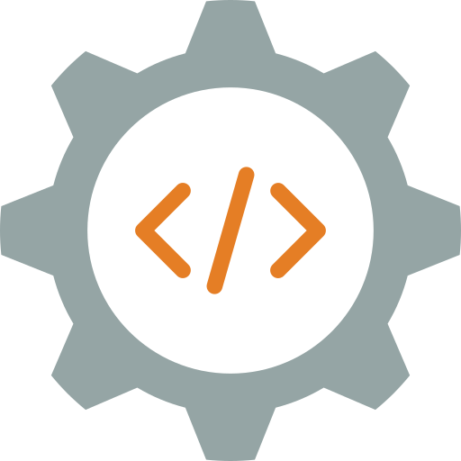
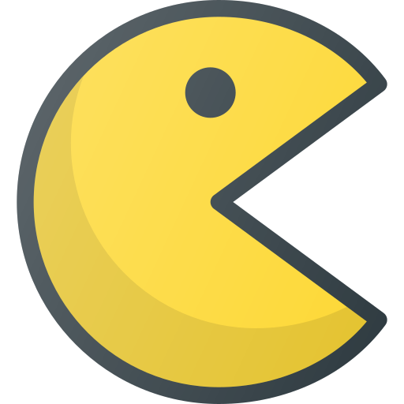

-
Vaibhav Mehta
Engineering Manager
-
Contact
- 8bit.codes
- vaibhav@quratek.com
-
Social
Personal Statement
Frontend Engineering Manager with 7+ years of experience working with JavaScript & the team to build robust & high performance apps. Experienced in developing and managing products & tools.
I develop random apps in my free time, mostly to ease the Development. JSONBin.io is one of the simple tools I've built which can be used as CRUD backend or to Mock API requests serving over million requests every week.
Product & Coding
Programming Languages, Frameworks, Tools & Products listed down are the ones I'm either hands-on with or I have worked or tried it out at least once and might not call myself as a Pro. I majorly work on JavaScript, CSS & JavaScript frameworks (I prefer not to work with React though).
-

HTML5
-

CSS3
-

JavaScript
-

Webpack
-

Node.js
-

Vue.js
-

Gulp
-

SASS
-

LESS
-

PHP
-

Ruby
-

RoR
-

MongoDB
-

MySQL
-

Redis
-

WordPress
-

ReactJS
-

Amplitude
-

Analytics
-

VWO
-

Optimizely
-

Photoshop
-

Lightroom
-

Sketch
-

Balsamiq
-

Jira
-

Confluence
-

Asana
-
GitHub
-

Bitbucket
-
Sentry
Personal Skills
- Collaboration
- Passionate
- Time Management
- Accountable
- Leadership
- Team Management
- Project Management
- Product Management
- High Ownership
Education
-
Bachelrors of Commerce
Major in Finance
Malini Kishor Sanghvi College of Commerce & Economics
Courses & Books Referred
-
Eloquent JavaScript
Marijn Haverbeke
One of the best JavaScript book I've referred to, would highly recommend.
-
You Don't Know JS
Kyle Simpson
An interesting read, which shares a lot of JavaScript insights and also discusses every topic in depth
Hobbies & Interests
-

Coding
-
Travelling
-

Lego
-

Gaming
-

Photography
-

Foodie
-
Reddit
-
Music
-

Hotwheels
-
Gadgets
Work Experience
-
BrowserStack 2015 - Current
Enginering Manager
After spending a year and a half as a lead, where I spent most of my time setting up new processes, hiring aggressively, and working on some challenging tasks like Frontend Health reports and developing a page Performance library to extract stats using the Performance API.
I was then promoted as an Engineering Manager of the Frontend team. From being more hands-on to more focused on People and Vision. I started working on my soft-skills to ensure that people are happy and productive.
My current day-to-day work consists of doing meetings with various stakeholders, unblocking my team members for access, or resolve cross-team dependency, if any. I also try to bring in some challenging and exciting work to the team where people learn something.
My primary focus as a manager is to groom and mentor the people in my team while also keeping on the business priority, delivery, and metrics in mind. Also, now my team has grown to twenty+ people.
-
Team Lead
We used to follow a squad model approach where every squad had its own set of Frontend and Backend developers. Thus, no Centralized Frontend team. Later, I suggested for a joint Frontend team where then I was appointed to lead the Frontend squad.
Here, I started focusing more on team dynamics than coding. From creating Processes like PR Reviews, upgrading existing frontend codebase to React, to proposing ideas for internal tools around Product Dashboards, which saved a lot of dev time while developing or debugging specific issues.
I was heavily involved in hiring and mentoring new joiners. I was also responsible for planning the future hiring and setting goals for the central squad and setting a vision on what needs to be worked upon in the coming months.
Apart from the above, I used to spend my time doing code reviews, setting some guidelines, revamping the way we used to do our daily work, and also shared timely feedback with my reporters on a bi-weekly basis.
-
Senior Software Developer
As a senior dev, my role was to collaborate and work closely with the Product Manager and the Designer to develop various features and experiments on the Live product. I also came up with simple ideas for a framework that can run experiments in-house with ease.
Worked on major releases like deals with Firefox and Edge browser for free trial users, script to detect websites if they are responsive or not, Device Logger POC (handling thousands of streaming lines on frontend).
I was responsible for massive code refactoring, where I removed dead code and applied DRY principles, which almost saved over 100k lines of code.
Apart from the above, I also took part in hiring & mentoring Frontend developers who joined BrowserStack.
-
Software Developer
I am the first Frontend developer to join BrowserStack. In my tenure as a Software developer, I've worked on various significant releases like BrowserStack website revamp, where I was responsible for developing hundreds of static and dynamic pages. I also worked on substantial features like Quick Launch, Browser listing, Keyboard navigation, etc.
-
Freelance Developer 2014 - Current
After spending a year in a Service based company, I decided to move on to the next challenge. I wanted to work on Products and not just simple websites. While utilizing my free time to study Advance JavaScript, I also took over some projects where I developed E-commerce like a website from scratch to big data websites, which helped me with my PHP & MySQL knowledge.
While freelancing, I had an opportunity to experiment with new libraries and frameworks. I played around with jQuery, Mustache/Handlebars.js also tried out CSS Animations (it was super popular back then) and also tried exploring preprocessors and task runners like SCSS & Grunt.
-
Neelnetworks Pvt. Ltd. 2013 - 2014
Team Lead
I was majorly responsible for Managing and Hiring the developers. Apart from that, I used to handle the company's clientele, from gathering the requirements to executing them and ensuring timely and quality delivery.
-
Software Developer
I joined as the first developer in the company. Initially, I helped the company grow by developing projects of any size single-handedly from developing simple brand websites to developing full-fledged dynamic websites like Matrimony Portal, CMS, etc.
I worked on various technologies that included HTML, CSS, JavaScript, PHP & MySQL, along with other frameworks and CMS like Joomla, WordPress, and Smarty.